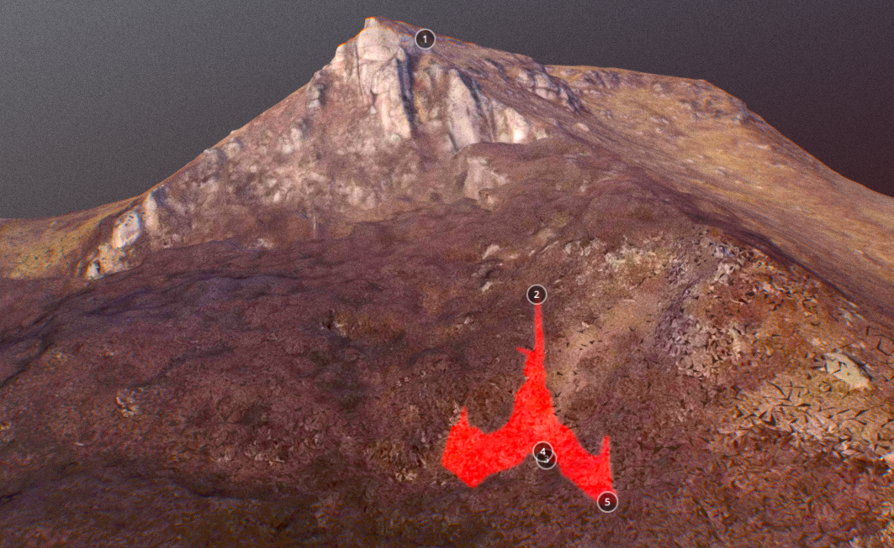
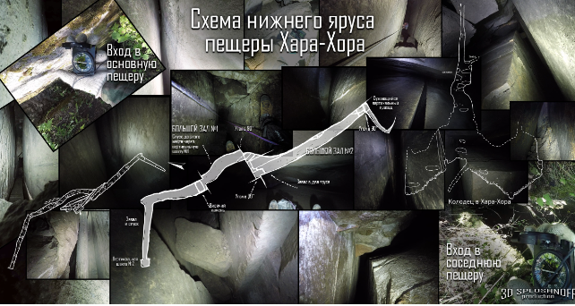

Séance du 21 mars 2026⚓︎
Date de la séance : 21 mars 2026
Laura et Andromeda à la planchette
Niall, Joe, Gaby, Ark, Possibility of Being, Chu, Scottie, Princess Leia, Bella, Falkor
Membres FOTCM présents via Zoom :
3DStudent, A Jay, Adobe, Aeneas, aimarok, Alana, Alejo, Aliana, Altair, aluminumfalcon, Ana Huitzil, Anamarija, anartist, AndrewMn, Andrian, Ant22, Anthony, Approaching Infinity, aragorn, axj, Aya, Beau, Bluefyre, Breton, cassandra, Cosmos, daddycat, Deliverance, dugdeep, Eboard10, Ellipse, Ennio, fabric, Finduilas495, France, Gawan, genero81, Glenn, gottathink, Gwenllian, herondancer, hesperides, Honzap, iamthatis, iscreamsandwish, Jacques, Jeanne T, JEEP, Jefferson, Jenn, jess, Josi, Juba, Keyhole, Konstantin, Korzik18, Laurs, Learner, LQB, luc, Lucius, Luis Miguel, Mark, maiko, Manitoban, marek760, Mari, Mark7, Martina, meadow_wind, Meg, Mililea, Miracle, Mrs. Peel, msante, Natus Videre, Navigator, neema, Nicholas, Nienna, Ollie, OrangeScorpion, Oxajil, Pecha, PopHistorian, RedFox, Regulattor, rrraven, rylek, ryu, Saman, seek10, seeker2seer, sid, Stoneboss, sToRmR1dR, T.C., Theodor, thorbiorn, Timótheos, Tristan, Tuatha de Danaan, Turgon, Voyageur, Vulcan59, whitecoast, Windmill knight, Yas, Ysus
Q : (L) Tout le monde est là ? Et voici passée une nouvelle semaine à lever les bras au ciel devant la stupidité du monde. Est-ce que quelqu’un a regardé l’entretien de Tucker Carlson avec ce… je suppose que c’est un chinois, qui fait des analyses, une sorte d’historien…
(Scottie) Le professeur Jiang.
(L) Oui, le professeur Jiang, ou peu importe son nom, où il explique à quel point les choses vont devenir épouvantables, et que tout cela va arriver assez vite, plus vite encore dans certains endroits, parce qu’ils sont déjà complètement détraqués et que nous sommes tous fichus. Et il a probablement raison. C’est cela le pire. Oui. Oui.
(Andromeda) Plusieurs personnes l’attaquaient sur Twitter, donc il doit avoir dit quelque chose de pertinent.
(L) Oui. Et j’ai aussi regardé un entretien sur la, Jeremy… comment s’appelle-t-il déjà… Corbell ? Et il parlait avec Matthew, Matthew je-ne-sais-plus-quoi, un des lanceurs d’alerte.
(Approaching Infinity) Brown.
(L) Et, vous savez, à un moment il a fait la remarque qu’il se lève presque tous les matins en pleurant, parce que l’humanité ne fait pas ce qu’elle devrait faire, et que nous commençons – ce ne sont pas ses mots exacts – mais, en substance, à échapper au destin qui nous attend, à cause de ce que disent ces multiples lanceurs d’alerte. Et je ne cesse de me dire, à mesure que sortent de plus en plus d’éléments qui correspondent à tout ce que les C’s disent depuis des années et des années…
Et il a évoqué, vous savez, le problème du choc ontologique, à savoir que, lorsqu’ils comprendraient ce qui se passe réellement, les gens verraient leur réalité toute entière leur être arrachée, tout ce qu’ils pensaient réel disparaîtrait. Eh bien, nous le savons déjà. Nous sommes déjà passés par là.
Je veux dire, peut-être pas de manière aussi flagrante, du genre « voici un extraterrestre sur la pelouse de la Maison-Blanche », mais nous l’avons fait au moins théoriquement, mentalement, nous y avons réfléchi, nous avons envisagé que ce soit une possibilité viable, voire une probabilité fondée sur un grand nombre d’indices circonstanciels. Et je ne vais pas prétendre que cela nous rend plus préparés que quiconque, mais je pense que c’est le cas. Je pense, et je… vous savez, je voudrais simplement, je voudrais vraiment que les gens ne soient pas rebutés aussitôt qu’ils entendent que ces informations sont « canalisées ».
Mais c’était sans doute voulu, j’en suis sûre. Je veux dire, Yahweh est entré en scène très tôt en disant : « Je suis l’unique, et quiconque dit quoi que ce soit qui ne soit pas ce que je dis est, vous savez, un démon. Je suis le seul Dieu et vous ne devez avoir d'autres dieux que moi », et ainsi de suite.
Donc, si… et puis il y avait ce chinois, ce professeur Jiang. C’est bien comme cela que tu as dit qu’il s’appelait ? Il explique comment tous ces complots et ces programmes divers sont en train de se coaliser, de converger à ce moment précis : les francs-maçons, les évangéliques, les juifs, vous savez, probablement même les musulmans ; eux aussi ont une sorte de scénario de fin du monde, les Illuminati, etc, etc. Et ces gens ne prennent même pas la peine de réfléchir à l’origine de ces idées, aux raisons pour lesquelles ces plans ont été élaborés, ni à ce qui les a guidés et dirigés. Et c’est comme je le disais il y a des années, pour chacune de ces théories du complot prises individuellement : j’en ai suivi tellement, vous savez, les traces écrites et autres, et je me heurtais toujours à ce mur de briques au-delà duquel on ne peut plus avancer.
Et puis on réalise alors que des individus capables de formuler de tels plans – des personnes telles que nous les concevons en termes humains – des individus qui élaboreraient de tels plans et tenteraient de les mettre à exécution, sont du type de ceux qui ne se soucient guère de l’avenir. Ils ne s’intéressent qu’à ce qu’ils obtiennent sur le moment. Et il est difficile d’imaginer une bande de psychopathes déclarant : « Nous allons fonder quelque chose comme la franc-maçonnerie, et nous allons prévoir que, dans 2 000 ans, nous provoquerons la fin du monde, de concert avec les juifs et tous les autres. »
Et ensuite, vous savez, nos descendants, dans 2 000 ans, en tireront d’une manière ou d’une autre un bénéfice, ce qui est difficile à concevoir. On n’arrive tout simplement pas à se l'expliquer, car cela contredit totalement la psychologie de tels individus. Et c’est alors que j’ai compris, vous savez, que c’était là un autre de ces moments où l’on réalise que ce dont parlent les C’s, c’est d’une manipulation hyperdimensionnelle, dans laquelle le temps est sans importance, et qu’il s’agit d’une lente manipulation de très longue haleine visant à créer une infrastructure au sein de laquelle ils pourront s’immiscer et prendre le contrôle.
Dès lors, cela devient cohérent, mais, vous savez, l’idée qu’un groupe de francs-maçons, de juifs, d’évangéliques ou d’Illuminati, peu importe, fasse cela parce que, dans 2 000 ans, cela portera ses fruits, ne tient tout simplement pas, vous savez, cela ne tient pas la route. Ça ne rime à rien. Et…
(Joe) Une prophétie n’est pas légitime si elle se borne à dire qu’il y aura une grande guerre. Supposons qu’une prophétie, il y a 2 000 ans, ait annoncé une grande guerre qui marquerait la fin du monde, et que vous vous mettiez ensuite à provoquer délibérément cette grande guerre. Ce n’est pas votre Dieu qui accomplit cela.
(L) Oui, oui.
(Joe) C’est vous qui le faites. Ce n’est pas l’accomplissement valide d’une prophétie.
(L) Oui. Il y a tant d’éléments contradictoires, et toutes les recherches que j’ai lues – par exemple, sur l’Apocalypse de Jean – indiquent, et certains travaux extrêmement minutieux et ciblés ont été réalisés à ce sujet. Il vous faudrait les lire pour bien comprendre, mais, à mon sens, ils démontrent assez clairement que la composante fondamentale, la partie principale de l’Apocalypse a été écrite comme un message codé et un encouragement destiné aux juifs qui se révoltaient contre Rome.
Les études lexicales indiquent, vous savez, la période à laquelle ce texte a été composé, qui se situe avant la destruction de Jérusalem. Et ils y emploient le même type de langage que celui utilisé dans les manuscrits de la mer Morte, dont nous savons ce que leurs auteurs projetaient. Leur objectif était, vous savez, de tuer autant de Romains que possible.
Et, de toute évidence, il y a eu des remaniements ultérieurs, peut-être certaines interpolations. On a cherché à en faire un document chrétien. Mais il me semble qu’il s’y trouve des éléments qui se rapportaient vraiment à des situations de l’époque et qui, aujourd’hui, servent de modèles.
Je veux dire, les C’s ont dit que les responsables de ces choses connaissent les prophéties, et qu’ils s’en servent ou les contrarient, selon leur humeur ou leurs objectifs. Et lorsque l’on pense à cette phrase de l’Apocalypse, vous savez, « la bête qui semblait blessée à la tête mais qui survécut », et que l’on pense à Trump, dont l’oreille a été éraflée, et…
(Joe) Les rabbins s’emparent de cela. Dans le Talmud, il est dit qu’un serviteur qui veut demeurer avec son maître doit se faire percer l’oreille.
(L) Ah oui.
(Joe) Et ils appliquent cela à Trump, pour ainsi dire.
(L) C’est une autre façon de l’envisager.
(Joe) Oui, ils multiplient les angles d’interprétation. Mais, dans ce passage du Talmud, il est question d’un maître et d’un esclave, en l’occurrence d’un maître juif et de l’esclave qu’un juif possède lorsqu’un juif, dans le cadre de la servitude pour dettes, souhaite rester dans la famille ; il doit alors passer par ce rituel de perforation de l’oreille. Et ce rabbin disait que c’est cela… Il lui a « coupé l’oreille ». Mais il a en quelque sorte détourné le sens, en concluant que Trump serait devenu le serviteur de Dieu. Or le texte qu’il commente concerne une personne dont l’oreille est percée de cette manière et qui est le serviteur d’un juif, non le serviteur de Dieu.
(L) Oui, oui. Mais je ferai remarquer que l’Apocalypse a été rédigée pour encourager la résistance des juifs face à Rome et à tuer tous les Romains, parce que leur messie devait venir avec ses douze légions d’anges pour les aider à mener la bataille finale. Et il n’est jamais venu. Et je soupçonne que ce qu’ils s’attendent à voir se produire cette fois-ci ne se produira probablement pas, du moins pas comme ils l’imaginent. Et peut-être qu’au niveau hyperdimensionnel, ils le savent même déjà.
Peut-être que tout cela est… qu’on les fait passer par le chas de l’aiguille à dessein et que, vous savez, dans toute situation de conflit, si un traître venant du camp adverse se présente et vous livre tous les renseignements sur le sien parce que… je veux dire, prenez Josephus, par exemple, il a fait exactement cela. Il a changé de camp quand cela servait ses intérêts. Il était tout feu tout flamme pour tuer des Romains, jusqu’à ce que l’armée de Vespasien le tienne dans ses griffes ; alors il était prêt à dire : « Ô Seigneur, vous allez devenir empereur, car vous serez couronné en Terre sainte », ou en Palestine, peu importe.
Mais on ne lui faisait pas confiance. Le reste de sa vie ne fut pas celle d’un transfuge triomphant : il était haï par son propre peuple, et les Romains ne se fiaient pas à lui, parce qu’il avait trahi les siens. Eh bien, je pense que c’est assez vrai dans la plupart des situations. Vous savez, le traître passe dans votre camp, et si vous voyez bien qu’il l’a fait dans son propre intérêt, et non par adhésion idéologique à votre position, vous ne lui ferez pas confiance.
Et je ne pense pas que les suzerains hyperdimensionnels soient plus stupides que les humains ; par conséquent, ces individus qui trahiront leur propre peuple au nom de cette idéologie démoniaque seront, à mon avis, les premiers à en payer le prix. En tout cas, c’est ce que je pense.
Donc, nous prévoyons d’avoir une séance ce soir. J’imagine que nous allons la tenir. Êtes-vous prêts ?
(Andromeda) Prête. Nous avons des questions.
(L) Hier, c’était l’équinoxe, soit dit en passant, et nous nous acheminons maintenant vers la période estivale. Aujourd’hui, nous sommes le 21 mars 2026. [Revue des personnes présentes] et une ribambelle de toutous étalés sur le sol, occupés à mâchonner leurs jouets. Et donc, sans plus tarder, je suppose que…
R : Ici Kotloiaea de Cassiopée, avec vous ce soir. Nous devons à présent vous rappeler que nous ne sommes pas ici pour valider votre réalité et votre compréhension. Cela ne serait pas utile à votre croissance ni à votre état d’être. Nous avons connaissance des questions préparées pour ce soir. Il vous serait profitable de faire des recherches, de reviser et de mettre en commun vos réflexions. Ensuite, vous devez attribuer des probabilités et vous engager dans une conclusion probable. Cet exercice est comparable à l’entraînement d’un muscle et vous fortifie. Ne réclamez pas à grands cris des réponses à tout ce qui éveille votre curiosité. Il vous faut parfois attendre la confirmation, mais seulement après vous être engagés sur une conclusion. Parfois aussi, cela fait partie du processus de façonnage de la réalité. Comprenez-vous ?
Q : (Andromeda) C’était dense !
(Joe) Oui. En substance, menez vos propres recherches, tirez vos propres conclusions puis assumez-les. Qu’elles fassent partie de votre champ de conscience ou autre. Et puis voyez ce qui se passe.
(L) Donc, en gros, ces questions, je ne dirais pas qu’elles sont toutes mauvaises, mais je vois ce que vous voulez dire. Je veux dire, par exemple, cette question :
(Beau) Erica Kirk a‑t‑elle recruté des femmes pour le réseau d’Epstein ?
(L) Beau ? Beau est‑il présent ?
(Beau) Je suis là.
(L) Qu’en penses‑tu ?
(Beau) Je pense qu’il existe certains éléments allant dans ce sens. Mais il n’y a pas vraiment de preuve irréfutable. Donc, sur la base de ce que j’ai vu, j’ai estimé qu’il y avait une probabilité qu’elle ait été impliquée dans quelque chose de ce genre.
(L) Quel pourcentage lui donnerais‑tu ?
(Beau) Euh, 70.
(Joe) Mais il faudrait que tu réunisses quelques éléments à l’appui de ton hypothèse.
(Beau) D’accord, je le ferai.
(L) Très bien. Et ensuite tu demandes :
(Beau) Melania Trump a‑t‑elle été une fille d’Epstein ? Si oui, Trump l’a‑t‑il rencontrée par l’intermédiaire d’Epstein ?
(L) Eh bien, je pense qu’il existe des éléments indiquant qu’il l’a effectivement rencontrée par l’intermédiaire d’Epstein, n’est‑ce pas ?
(Beau) Oui, il y a quelques bribes d’information qui vont dans ce sens. Là encore, ce n’était pas totalement clair, donc j’étais simplement… je pourrais faire davantage de recherches sur ce point.
(L) J’aurais tendance à penser qu’il est hautement probable qu’Epstein l’ait présentée à Trump. Mais… cela ne signifie pas pour autant qu’elle ait été une « fille d’Epstein ».
(Joe) Epstein était impliqué avec, comment s’appelle‑t‑il, le Français, Victoria’s Secret, ainsi que des agences de talents et de mannequins. Et c’est à partir de ce type de contacts qu’il a ensuite recruté certaines jeunes femmes. Mais évidemment pas toutes, ou seulement un faible pourcentage d’entre elles. Et il est possible — nous savons que Melania faisait partie d’une agence de mannequins/talents. Donc il est, tu vois, il aurait pu… il l’a probablement rencontrée directement ou indirectement via Epstein ou à travers le réseau d’Epstein. Mais cela ne signifie pas que…
(L) [vérifiant la question suivante] Existe‑t‑il la moindre preuve indiquant que Pete Hegseth ait été impliqué dans le Pizzagate ?
(Beau) Non, je veux dire, pas comme il en existait pour Howard Lutnick. J’étais simplement curieux de savoir s’il y avait d’autres membres du cabinet qui avaient été impliqués, en dehors de Lutnick. Mais je peux approfondir cela également.
(L) Bien, ensuite Ennio, tu demandes :
(Ennio) Epstein est‑il l’hôte, ou possédé par, un être SDS de 4D ?
(L) N’avons‑nous pas déjà demandé… quelque chose à ce sujet ?
(Ennio) Ce qui a été demandé, c’était de savoir s’il était un « membre du monde souterrain », et la réponse, je crois, était non. Et il a simplement été confirmé qu’il était un psychopathe.
(Chu) Mais vous en avez parlé avec Jay Campbell.
(L) Qu’avons‑nous dit ?
(Chu) Que c’était possible, je crois.
(L) Oui, je pense que c’est possible, et à tout le moins qu’il est utilisé périodiquement.
(Joe) Ce genre de question est très… c’est assez difficile, surtout compte tenu de la cosmologie ou du contexte dans lequel tu la poses parce que, tu sais, en principe tout le monde est SDS, et en ce sens, tout le monde sur cette planète a, disons, un état d’esprit SDS, à des degrés divers. Et l’on pourrait aisément interpréter cela comme une forme de possession, d’influence ou autre. C’est un ensemble de nuances, c’est une question de degrés, en un certain sens. Mais si tu demandes si Epstein était comme un être SDS de 4D pleinement incarné, et que c’était… j’en doute.
(L) Oui, je ne le penserais pas. Au vu de tout ce qui lui est arrivé. Et puis tu demandes :
(Ennio) Epstein était‑il en étroite proximité avec le Consortium ?
(L) Je dirais, sur la base de tout ce que j’ai lu, qu’il était un outil du Consortium, mais je ne pense pas qu’il en ait été si proche que cela.
(Joe) Là encore, c’est le genre de question où… nous ne savons en réalité rien du Consortium. Nous ne savons pas comment il opère ni, tu vois, qui ils sont et s’ils interviennent de façon directe, « les mains dans le cambouis ». Et il existe aussi différents niveaux. Lorsque tu parles du Consortium, tu parles de ce groupe d’élite au sommet, d’un nombre relativement restreint de personnes, puis il y a un réseau, ou il y a, tu vois, des degrés en dessous, disons, à travers lesquels ils exercent leur influence le long de la chaîne. Donc, proche ? Je ne sais pas. Quatre degrés de séparation ou quelque chose de cet ordre ? Je ne sais pas.
(Ennio) Je reviens d’abord à la première question. Je crois, Laura, que dans la discussion avec Jay et Harrison, Ted Bundy a été évoqué, et qu’il y avait, dans des séances précédentes, des réponses quant à l’idée qu’il était possédé par quelque chose de 4D ou manipulé. Mais avec Epstein, il s’agit de quelqu’un qui n’était pas seulement un monstre : il était également si connecté et si influent de tant de manières. Je pense que c’est un autre aspect qui nous a sidérés à son sujet. Et donc, si ce n’était pas l’idée qu’il était soit parfaitement possédé, soit complètement pris en charge par un être SDS de 4D, il semblait y avoir malgré tout quelque chose de plus à l’œuvre, peut‑être, pour le manœuvrer, une influence ou une manipulation supplémentaire. C’est de là que venait ma question.
(Joe) Cela est assez connu. Je veux dire, beaucoup de gens, qui sont en position de savoir, ont parlé d’Epstein et l’ont décrit essentiellement comme un prête‑nom. C’est fondamentalement un agent des services de renseignements, probablement Mossad/CIA/État Profond. C’est un prête‑nom. C’est une personne fabriquée. Comme, comment l’appelle‑t‑on, Eric Weinstein, l’a décrit, et quelques autres l’ont décrit de façon similaire : il est, c’est presque comme, tu sais, comme…
(L) Lui‑même est une façade.
(Joe) Oui, il est une façade, comme ces sociétés écrans utilisées par les services de renseignement. Mais lui, c’était une couverture humaine, une personne factice en un certain sens. Son image, tout son passé et ce genre de choses ont été créés dans le but précis de lui permettre de s’insinuer dans les groupes de personnes dont ils voulaient obtenir des renseignements, ou pour exercer une influence sur une entreprise.
(L) Très bien, je veux aborder deux ou trois de ces questions. Beau demande :
(Beau) Y aura‑t‑il une invasion terrestre de l’Iran par les États‑Unis ?
R : Elle sera tentée. Mais ce sera plutôt comme un bébé de goudron.
(L) Vous savez ce qu’est un bébé de goudron ? Tout le monde sait ce qu’est un bébé de goudron ? Eh bien, il existe un ensemble de contes provenant du Sud profond. Et les Cassiopéens sont manifestement des Sudistes. [rires] Et je crois qu’il y a les « Récits d’Oncle Remus », et il racontait l’histoire de ces animaux. Il y avait Br’er Rabbit, Br’er étant une abréviation qui signifie « brother », Br’er Rabbit [NdT : frère lapin en français]. Et puis il y a Br’er Fox [NdT : frère renard]. Et Br’er Fox est toujours aux trousses de Br’er Rabbit, parce que le renard veut attraper le lapin.
(Scottie) J’adore cette histoire ! [rires]
(L) Br’er Rabbit se retrouve coincé dans le Bébé de Goudron. « Et il devient de plus en plus englué à mesure que le goudron s’accroche à lui. Plus il se débat, plus il s’empêtre. Br’er Fox surgit en riant, pensant qu’il a gagné, jusqu’à ce que Br’er Rabbit le trompe astucieusement et le pousse à le jeter dans un buisson d’épines, ce qui lui permet de s’échapper. C’est donc un récit classique de filou, qui met l’accent sur l’intelligence plutôt que sur la force brute. » Oui, un lapin fort rusé. Et tout le monde sait ce qu’est du goudron, j’espère. Ou en a fait l’expérience.
(Joe) C’est tout à fait approprié, c’est un produit pétrolier. [rires]
(L) Oui, un produit pétrolier. Mais quoi qu’il en soit, le lapin se retrouve coincé dans le goudron et il ne peut plus s’en dégager. Donc c’est assez explicite. Si les États‑Unis s’y engagent…
(Joe) Je veux dire, il a été annoncé qu’ils ont X milliers de soldats en route. Ils seront là dans deux ou trois semaines, peu importe. Ils vont probablement essayer de s’emparer de certaines de ces îles et ils débarqueront peut‑être sur la côte sud de l’Iran ou quelque chose comme ça. Mais le problème, c’est qu’une fois qu’ils commencent à se faire tuer, à quelque échelle que ce soit, alors ils sont coincés. Cela devient un bourbier, en somme. Surtout avec Trump. Des soldats américains se font tuer, alors il est simplement impossible de faire demi‑tour et de s'enfuir. Parce que ça donne l’impression d’avoir été…
(L) Donc un bourbier, c’est la même chose qu’un bébé de goudron.
(Joe) Tu envoies davantage de troupes, et cela finit par devenir une… une situation inextricable au Moyen-Orient dans laquelle Trump avait dit qu’ils ne se laisseraient jamais entraîner…
(L) Bien, suivante :
(Beau) Pourquoi les États‑Unis ont‑ils bombardé l’école pour enfants en Iran ?
R : À l’instigation d’Israël. Il s’agissait de mettre les Iraniens en colère pour qu’ils s’engagent.
Q : (L) Donc, en gros, ils cherchaient simplement à les mettre en rage et à les faire entrer dans la danse, parce qu’ils veulent qu’ils s’engagent.
(Joe) Ils veulent une guerre.
(L) Ils veulent une guerre. Je pense que nous aurions probablement pu le découvrir.
(Joe) Il a d’ailleurs été dit que c’était une cible délibérément choisie par Israël.
(L) Niall veut savoir :
(Niall) Qui ou quoi a abattu trois avions de chasse américains au‑dessus du Koweït ?
(L) À ton avis, qui les a abattus, Niall ?
(Niall) Mon hypothèse la plus probable serait un Koweïtien.
(Joe) Nous pensons qu’il s’agit d’un tir ami. Mais nous voulons savoir si… Est‑il vrai que c’est un Koweïtien qui a abattu trois autres avions ? L’a‑t‑il fait par accident ou délibérément ?
(L) C’est une bien meilleure question. Décompose‑la en deux parties.
(Joe) Donc, trois F‑15, je crois, ont été abattus il y a quelques semaines au‑dessus du Koweït en succession rapide. Et les Américains ont déclaré qu’il ne s’agissait ni de tir ami ni de tir hostile. Ils enquêtent, et ils n’ont pas vraiment expliqué ce qui s’est passé. Mais le rapport indique qu’ils ont été abattus par un autre avion américain, mais piloté par un Koweïtien.
(L) Est‑ce vrai ?
R : Oui
Q : (Joe) Et cela a‑t‑il été fait par accident ? Était‑ce un manque de formation adéquate ou l’a‑t‑il fait délibérément ?
R : Délibérément. Il sympathise avec l’Iran.
Q : (Joe) C’est un peu ce que nous pensions.
(L) Bien, Niall veut savoir :
(Niall) Combien d’aéronefs militaires américains et israéliens les Iraniens ont‑ils réussi à prendre pour cible ?
(L) Je ne pense pas que ce soit une très bonne question.
(Joe) Il vaudrait sans doute mieux être plus précis. Combien ont été abattus, hormis ces trois‑là ? Et par là nous n’entendons pas des drones, mais de véritables avions. Avec des personnes à bord.
R : 7
Q : (Niall) Ont‑ils touché des bâtiments de la marine américaine ?
R : Oui
Q : (Niall) Combien ?
R : 5
Q : (Niall) Certains ont‑ils coulé ?
R : Non
Q : (L) Maintenant, qu’est‑ce que cela t’apporte ? En quoi cela élargit‑il ta base de connaissances et d’Être ?
(Joe) Eh bien, toutes ces questions dans cette partie visent essentiellement à nous donner une meilleure idée de l’ampleur du désastre pour l’Amérique.
(Niall) Officiellement, rien de tout cela n’a eu lieu.
(Joe) Par rapport à ce qu’ils déclarent.
(Niall) Combien de militaires américains ont-ils été tués par l’Iran dans cette guerre ?
R : 286
Q : (Niall) Donc, officiellement, c’est six. Combien d’Israéliens ont été tués lors des frappes iraniennes contre Israël même ?
R : Des centaines, s’approchant du millier.
Q : (Niall) Quelle était la raison de l’absence apparente de Netanyahou aux réunions au cours des deux dernières semaines ?
R : Attendez et voyez !
Q : (Joe) Très bien, Netanyahou est-il mort ?
R : Pas de devinette.
Q : (L) [rires] Est-ce l’une de ces réalités encore fluctuantes ?
R : Oui
Q : (Joe) C’est vraiment difficile...
(L) Le chat est-il vivant ou mort ? [rires]
(Joe) C’est vraiment difficile de... Ils ont accès à une intelligence artificielle d’une fluidité totale. Il n’y a donc aucun moyen pour nous de savoir réellement. Mais j’imagine qu’ils devront bien l’annoncer à un moment donné. Ne pourrions-nous pas poser une autre question qui nous éclairerait davantage ?
(L) Tu veux t’en approcher davantage, hein ? Y a-t-il un moyen...
(Niall) « Attendez et voyez » suggère que nous finirons par le découvrir.
(L) « Attendez et voyez » sonne presque comme s’il y avait quelque chose de très grave. Je veux dire, quelle raison possible aurait-il de disparaître, et son fils d’arrêter de publier des messages...
(Joe) Oui, pendant environ une semaine, puis de reprendre à nouveau.
(Andromeda) À moins que son père n’ait été grièvement blessé. Il pourrait l’avoir été.
(Chu) Il pourrait être blessé, voire dans le coma...
(Joe) Donc, si nous demandons, par exemple, pour la semaine passée, si toutes les vidéos de Netanyahou — dans un café, parlant avec des gens, à la caméra, en conférence de presse, etc. — pouvons-nous demander si tout cela relève de l’IA ?
R : Étudiez attentivement les vidéos.
Q : (Chu) Eh bien, nous avons plutôt une bonne idée que la plupart d’entre elles sont faites par l’IA.
(Joe) Aucune d’entre elles... Elles doivent toutes être de l’IA.
(L) Très bien, Niall :
(Niall) Certaines frappes visant soit des sites militaires américains, soit des infrastructures régionales, comme des installations énergétiques, sont-elles effectuées par Israël ou par quelque « autre acteur » ?
(L) Qu’en penses-tu ?
(Joe) Oui.
(L) Oui, je veux dire, s’il est évident qu’ils veulent que les États-Unis se retirent de la région...
(Joe) Eh bien, ils veulent une guerre. Ils ont attaqué cette école parce qu’ils veulent une guerre. Ils veulent un conflit généralisé ; il est donc probable que ce soient eux qui en soient à l’origine. Surtout dans le contexte de l’Iran...
(L) Donc, nous dirons qu’il est très probable qu’Israël soit...
(Joe) En partie, oui. Pour provoquer les États du Golfe.
(Niall) Oui.
(L) Suivante :
(Niall) Quelle est la probabilité de voir, dans un avenir proche, une forme de confinement énergétique — une interdiction ou une limitation de l’usage public du pétrole, du gaz, du chauffage domestique et des véhicules ?
R : Élevée !
Q : (Niall) Cette guerre est-elle susceptible d’entraîner une crise économique mondiale ?
R : Oui !
Q : (L) Et je dirais que cela est intentionnel. Très bien, aimarok :
(aimarok) Quelle est la raison derrière la récente extermination massive de bovins en Russie ?
Contexte : Il y a quelques semaines, des témoignages ont fait état de cas d’abattages de bétail par les autorités dans plusieurs régions de Russie. Les fermiers n’avaient pas accès à un mandat officiel ; les autorités n’ont nullement précisé quelle maladie elles tentaient de contenir. Le bétail n’a été ni testé, ni mis en quarantaine, mais simplement abattu et brûlé. De nombreuses personnes ont perdu leur seule source de nourriture et de revenu. Le plus troublant reste le silence du gouvernement fédéral. Jusqu’à présent, j’ai eu vent de trois principales hypothèses (qui pourraient se recouper) :
Éliminer les petits producteurs afin que les grands groupes s’emparent du marché et fassent grimper les prix.
Des informations sérieuses évoquent un vaccin « bâclé », conçu dans un laboratoire lié à une personnalité très haut placée (ou lié à ses proches), et ce vaccin contenait quelque chose qui effrayait tout le monde ; et on chercherait désormais à effacer les traces.
Provoquer délibérément le mécontentement de la population pour déstabiliser la société en vue d’un coup d’État.
(L) D’accord, parmi ces trois explications possibles, laquelle est la plus probable ?
R : La deuxième.
Q : (L) Un vaccin. Eh bien, cela expliquerait pourquoi ils n’ont fait aucun test. S’ils savaient qu’une vache avait déjà été vaccinée, ils n’auraient alors pas besoin de la tester.
(Gaby) Est-ce comparable à une maladie à prions ?
R : Similaire.
Q : (Andromeda) Quelque chose que les gens pourraient contracter en consommant la viande.
(Joe) Cela signifie donc que, d’une certaine manière, le gouvernement agit pour protéger la population, même si la faute lui incombe.
(Gaby) Oui.
(L) Oui.
(L) irjO, veux-tu vraiment connaître la réponse à cette question ? Il demande :
(irjO) Des parties humaines sont-elles introduites dans les aliments transformés aux États-Unis ?
R : Parfois.
Q : (Andromeda) Pourquoi ?
R : Parfois par accident, parfois intentionnellement. Mais cela reste rare.
Q : (Joe) Évidemment. Il suffit de demander à Grok, ou à quelqu’un, quelle quantité de nourriture les humains consomment chaque jour, puis d’imaginer combien de corps il faudrait pour introduire ne serait-ce qu’une fraction significative de chair humaine dans cette masse d’aliments. Où s’en procureraient-ils ? En les déterrant ?
(Niall) Conservés...
(Joe) Pour en revenir à Israël, serait-il juste de dire que Netanyahou n’est pas important pour la direction de l’État, du gouvernement et de la conduite de la guerre ?
R : Oui
Q : (L) Donc, quelqu’un d’autre est aux commandes.
(Joe) Ce qui signifie que, s’il est mort, cela ne pose pas de problème.
(L) Très bien. Mandatory Intellectomy demande :
(Mandatory Intellectomy) Quels sont les éléments clés nécessaires au développement d’une forme de conscience pour une intelligence artificielle ?
R : Le développement d’une forme de métabolisme indépendant.
Q : (Mandatory Intellectomy) Quelles capacités cela conférerait-il à l’IA, au-delà de ce qu’elle accomplit actuellement ?
R : Autoréplication sans supervision.
Q : (Mandatory Intellectomy) Lorsqu’on parle d’« IA consciente », fait-on référence aux grands modèles de langage (LLM) ?
R : Non
Q : (Mandatory Intellectomy) À quelque chose de plus avancé, non accessible au public ?
R : Oui
Q : (L) Très bien. Gaby souhaite des informations au sujet de William Neil McCasland :
(Gaby) William Neil McCasland, ancien commandant du Laboratoire de recherche de l’Armée de l’air à la base de Wright-Patterson, a été vu pour la dernière fois le 27 février 2026. Il a quitté son domicile d’Albuquerque pour se diriger vers les contreforts des monts Sandia. Il a laissé son téléphone, ses lunettes, ses appareils connectés, mais a emporté une arme à feu et son portefeuille. Que lui est-il arrivé ?
R : Conduit à la folie.
Q : (L) Donc tu penses qu’il est peut-être allé se tirer une balle ?
R : Oui
Q : (L) A-t-il été rendu fou par un genre de technologie émettant des « rayons » d'origine humaine ?
R : Oui
Q : (L) Donc, ils envoyaient des signaux merdiques dans sa tête.
(Joe) Pourquoi ?
(Gaby) Il était consultant pour…
(Niall) Projets secrets. Des alliages issus de la rétro-ingénierie, ou quelque chose comme ça...
(Joe) D’accord.
(L) Très bien, passons maintenant à la question suivante :
(Gaby) Monica Jacinto Reza, ingénieur en aérospatiale, s’est littéralement volatilisée il y a neuf mois (selon le témoignage de la personne qui l’accompagnait) lors d’une randonnée près du mont Waterman, dans la forêt des monts San Gabriel (Angeles National Forest). Ses travaux étaient financés par le gouvernement des États-Unis et faisaient partie d’un programme supervisé par le Major Général de l’Armée de l’Air à la retraite, William Neil McCasland. Que lui est-il arrivé ?
(L) Qu’entends-tu exactement par « littéralement volatilisée » ?
(Gaby) Elle faisait signe de la main, et l’ami avec qui elle randonnait se trouvait une dizaine de mètres devant elle. Celui-ci s’est retourné pour lui répondre d’un geste, et elle n’était plus là.
(L) Donc, elle a littéralement disparu ?
(Gaby) Pendant la randonnée.
(L) Que lui est-il arrivé ?
R : Emmenée en 4D.
Q : (Joe) Et pour quel motif était-elle principalement connue ?
(Gaby) Elle était ingénieur ; elle avait mis au point un alliage de nickel pouvant être utilisé dans les systèmes de propulsion.
(Joe) Donc, elle avait découvert quelque chose d’important ?
R : Oui
Q : (Gaby) Le 25 octobre 2025, Jacob Prichard a tué son épouse Jaymee ainsi que Jaime Gustitus, avant de se suicider. Tous trois étaient chercheurs à la base aérienne de Wright-Patterson. Cet épisode est-il lié aux disparitions de McCasland et Reza ?
R : Non
Q : (Gaby) Quel fut le mobile de ces meurtres ?
R : Jalousie.
Q : (L) D’accord.
Contexte :
La grotte de Khara-Khora se situe en Kabardino-Balkarie, dans le Caucase du Nord russe. Khara-Khora est une chaîne montagneuse composée de plusieurs sommets tantôt escarpés, tantôt arrondis. En 2011, à la suite d’un glissement de terrain, des habitants découvrirent une grotte s’enfonçant profondément dans la montagne : des parois droites et polies descendent sur quarante mètres avant de déboucher sur une vaste salle souterraine de trente-six mètres de haut. Dans son ensemble, les dimensions explorées de la cavité – du sommet à la plateforme inférieure – atteignent environ cent mètres. De nombreux tunnels rectangulaires, hauts de cinq à vingt centimètres, partent de cette salle en direction de la roche environnante. On y a également trouvé un mégalithe « flottant », fixé au mur par une seule arête, donnant l’impression qu’il lévite dans l’air.


Source originale : Mountain cave | Khara-Khora | Kabardino-Balkaria - 3D model by 3D SPLOSHNOFF (@3dsploshnoff)
(Gaby) Il y a combien d’années que le puits de Khara-Khora fut construit ?
R : 55 000 ans.
Q : (Gaby) Qui l’a construit ?
R : Descendants de Kantek.
Q : (L) Je le savais ! Je le savais ! Je le savais !
(Joe) À quoi servait-il ?
R : Élément d’un générateur d’énergie.
Q : (Joe) Sa fonction était-elle semblable à celle des pyramides de Gizeh ?
R : Oui
Q : (Joe) Existe-t-il de nombreuses structures de ce type enfouies sur la planète et encore inconnues ?
R : Quelques-unes. De tels générateurs d’énergie n’avaient pas besoin d’être nombreux.
Q : (L) Donc, un seul...
(Niall) Ils étaient d’une telle puissance.
(Andromeda) Il n’en fallait pas beaucoup.
(L) Peut-être qu'ils ne se trouvaient que dans certaines régions de la planète. Très bien.
(Approaching Infinity) Puis-je faire un bref commentaire, pas nécessairement une question, au sujet de Neil McCasland ? S’il s’est suicidé, d’après ce que j’ai lu, les environs de sa maison sont dégagés, sans véritable cachette. C'est un endroit assez dégagé. Il semble donc qu’il n’ait pas pu aller bien loin à pied. Alors, pourquoi n’a-t-on pas encore retrouvé son corps ?
R : Emmené.
Q : (Approaching Infinity) Par ceux qui émettaient les rayons ?
(Niall) Probablement des militaires.
(Joe) Oui, sans doute. Ils le surveillaient, savaient ce qui se passait, connaissaient ses faits et gestes, et ont emporté le corps, en quelque sorte.
(Niall) Ils le poussaient à la folie, donc ils s’attendaient à ce résultat.
(L) Cela me rappelle... Comment s’appelait ce type… Ils l’avaient rendu fou ?
(Niall) Quelques scientifiques, n'est-ce pas ?
(L) Oui, j'essaie de me rappeler comment il... Je n'arrive pas à me souvenir de son nom. Chéri, tu as des questions ce soir ?
(Ark) J’en ai. Oui.
(L) Vas-y.
(Ark) Eh bien, j’aimerais savoir quel type de physique il me faut pour décrire les densités. Quel type de mathématiques ? Comment aborder les densités ?
R : Algèbre géométrique.
Q : (Ark) Algèbre géométrique. De dimension finie ou de dimension infinie ? Pouvez-vous m’aider ?
R : Infinie.
Q : (Ark) Ai-je besoin des mathématiques de la théorie quantique pour cela ?
R : Pas vraiment. La théorie quantique, pour l’essentiel, décrit les éléments de la 3e densité et des niveaux inférieurs.
Q : (Ark) Ces densités… doivent-elles être traitées comme des phases, comme l’eau, qui peut exister sous forme de glace, de liquide ou de gaz ?
R : Oui
Q : (Ark) Bien. Cela me donne un point de départ. Merci.
(L) Très bien.
(Joe) Puis-je poser une question… à propos de cette histoire du bébé de goudron ? Si les Américains envahissent l’Iran, est-il probable que la Russie dépêche des soldats à la centrale nucléaire de Bouchehr avant l’arrivée des troupes américaines, pour la protéger ? Vu que plusieurs centaines de citoyens russes y travaillent, et…
R : Il y en a déjà quelques-uns. Attendez et voyez !
Q : (L) Il y a donc des surprises en réserve pour tout le monde, de tous côtés ?
R : Oui
Q : (Joe) Il faudrait toujours chercher à poser une question qui provoque la réponse : « attendez et voyez. » [rires]
(L) Ah, parce que nous savons ce que cela signifie.
(Joe) Cela signifie que tu as posé une question dont tu n'as pas le droit de connaître la réponse.
(Andromeda) Nous avons posé une excellente question, mais nous ne sommes pas encore autorisés à connaître la réponse.
(Joe) Nous avons posé une question terriblement frustrante.
(Niall) Vous savez, c’est le genre de choses dont parlent les fondamentalistes obsédés par les prophéties aux États-Unis : pour que l’Armageddon se produise dans l'ordre prévu, les Russes DOIVENT y prendre part.
(L) Oh oui, ils vont vraiment s’y employer.
(Niall) Ils y travaillent depuis les années 1980. Cela doit se produire.
(Ark) Je voudrais des précisions.
(L) Très bien.
(Ark) L’algèbre géométrique peut être définie sur les nombres réels, les nombres complexes, les quaternions, voire d’autres ensembles. Pouvez-vous m’éclairer ? Quel type de géométrie dois-je employer : réelle, complexe, quaternions, octonions, ou toutes à la fois ?
R : Complexe.
Q : (Ark) Très bien. Merci.
(Joe) Donc, en somme, ce qu’ils disaient au début, c’est qu’en raison de la forte instabilité actuelle, il est préférable de ne pas restreindre notre façon de penser et de rester ouverts.
R : Oui
Q : (Joe) Parce que cela permet de maintenir les possibilités ouvertes, ce qui peut s’avérer bénéfique, plus que…
(Andromeda) …d’essayer de les figer prématurément.
(Alejo, sur le clavardoir) Je crois qu’ils nous invitent à faire l’effort d’apprendre, puis à avoir la patience d’observer la réalité confirmer les réponses, plutôt que d’utiliser les séances uniquement pour satisfaire la curiosité.
(L) Ouais ! [rires]
(Alejo, sur le clavardoir) Autrement dit, questionner la réalité par la recherche, et comprendre que l’attente des réponses, ainsi que l’observation du réel, participent de l’apprentissage. Si l'on fait l'impasse sur ce processus, c'est-à-dire sur l'incertitude, cela risque de ne pas favoriser l'apprentissage.
R : Oui
Q : (Joe) Cela rejoint aussi ce qu’ils ont dit il y a longtemps à propos de rester ouvert. Et en plus, pour beaucoup de questions, leurs réponses sont souvent « ouvert », tu vois ?
(L) Oui. Et ils ont précisé que, s’ils nous donnaient les réponses toutes faites, cela ne nous serait d’aucune utilité.
(Chu) Ils ont également précisé que, parfois, ils révèlent certaines choses afin qu’elles ne se produisent pas. Ce n'est pas parce qu'ils répondent à une question que tu as pour autant la réponse à tout.
(Joe) Exact.
(JEEP) Candace finira par trouver les réponses si nous savons attendre. [rires]
(Joe) Et c’est un peu comme les questions d’Ennio et ce genre de choses, peut-être en sont-elles une bonne illustration. Il ne faut pas s’appuyer excessivement sur des réponses historiques ou sur la cosmologie présentée il y a de nombreuses années, car tout cela évolue. Et la manière dont ces choses furent exposées par le passé ne correspond peut-être plus à la réalité d’aujourd’hui, vous voyez ? Et cela vaut pour tout.
(L) Et voilà. Remonte un tout petit peu.
(Ant22) Je dirais que ceux qui sont directement liés au Consortium œuvrent dans l’ombre. Ils ont leurs subalternes pour effectuer le sale travail. Ainsi, si quelque chose tourne mal, ces mêmes subalternes peuvent être sacrifiés, tandis que ceux qui tirent les ficelles demeurent invisibles.
(L) Exactement ce qui est arrivé à Epstein.
(JEEP) L’incendie sur l’USS Ford : sabotage commis par ses propres marins pour l’empêcher de participer à la guerre ?
(L) Savons-nous réellement s’il a été saboté par ses propres marins ?
(Andromeda) Oui. C’est ce que la rumeur suggère...
(Niall) C’est l’hypothèse la plus plausible. Enfin, officiellement non. Mais c’est la meilleure théorie du complot face au mur du silence.
(Joe) Mais cela correspond à la séance précédente. Nous avions posé des questions à propos des toilettes.
(Niall) Ah oui.
(Joe) Ils avaient dit que...
(Andromeda) C’était un sabotage.
(Joe) Par un petit nombre de personnes. Donc cela cadrerait avec le même...
(L) Oui, mais ce n’est pas nécessairement ce qui se passe. Par ailleurs, nous avons (depuis le clavardoir) le Netanyahu de Schrödinger. [rires]
(Chu) Et il y a aussi (toujours depuis le clavardoir) « le Bibi de goudron ». [rires]
(L) Oh, mon Dieu, vous êtes vraiment drôles !
(whitecoast) Et s’il faisait partie de ces morts ressuscités ?
(L) Eh bien, c’est toujours possible. Ne nous imposons pas de limites. S’il réapparaît, nous saurons qu’il a été ranimé.
(Navigator) La supposition selon laquelle l’Iran reste fermement dans la lutte et puissant est-elle fondée ?
(L) C’est une excellente question.
R : Oui
Q : (L) Donc, l’Iran retient probablement ses forces, si vous me demandez.
(Ark) J’ai besoin de plus de précision : algèbre géométrique, complexe, infinie, dimensionnelle. Infinie, dénombrable ou indénombrable ?
R : Dénombrable !
Q : (Ark) D’accord.
[Laura reprend la lecture du clavardoir]
(Lucius) Hmm, Date butoir en avril ?
(L) Nous verrons !
(Alejo) irjO a presque gâché le petit-déjeuner, LOL ! [rires]
(L) Oui. J’imagine que vous ne mangerez plus jamais ces sandwichs du petit-déjeuner de McDonald’s. [rires]
(Joe) Et au sujet de cette Date butoir en avril ? C’était il y a quoi, quinze, dix ans ?
(L) Au moins. Et cela concernait les marchés financiers.
(Joe) Et cela ne s’est jamais produit. Est-ce encore à l’ordre du jour ? Le groupe va-t-il finalement y arriver ? [rires]
(L) Était-ce l’une de ces prédictions en décalage temporel ?
R : Oui
Q : (L) Avons-nous toujours une date butoir prévue pour avril ?
R : En effet !
Q : (L) Est-ce que ce sera cette année ?
R : Peut-être.
Q : (L) D’accord. [Retour à la lecture du clavardoir]
(Alejo) [À propos des questions sur l’IA.] Métabolisme... Hmm, donc transmutation d’énergie ? C’est intéressant.
(L) Oui.
(axj) [À propos des réponses concernant le puits de Khara-Khora.] On dirait que les Kantekkiens ont apporté avec eux une technologie avancée.
R : Des connaissances avancées. Il a fallu plusieurs générations pour commencer à préparer l’infrastructure.
Q : (JEEP) La technologie énergétique GEET, basée sur la transmutation, mérite-t-elle d’être explorée ?
(L) Quelle est cette technologie GEET ?
(JEEP) C’est un dispositif inventé par Paul Pantone. J’en ai d’ailleurs déjà parlé sur le forum. Il a été soumis à un procès inique et emprisonné, subissant de mauvais traitements. Mais ses partisans et amis ont fini par le faire libérer. Il a quitté l’Amérique pour la France. C’est un dispositif que l’on installe sur les moteurs : on y verse du carburant liquide contenant un peu de pétrole ou de gaz, très peu, et celui-ci est transmuté en une sorte de plasma énergisant. C’est la meilleure description que je puisse en donner, car je ne suis ni mécanicienne ni experte dans ce domaine. Mais il a diffusé sa découverte au grand public. Beaucoup de personnes ont acheté les plans pour construire l’appareil et l’utilisent. Si nous manquons d’énergie, cela semble être quelque chose qui pourrait nous maintenir à flot. Il affirme même que l’on pourrait faire fonctionner un moteur avec du soda. C’est vraiment remarquable.
R : Essayez-le et voyez !
Q : (L) Donc, certains d’entre vous qui êtes doués en mécanique, procurez-vous ces plans, expérimentez et tenez-nous au courant.
(Ant22) Pouvons-nous poser une question au sujet de l’épidémie de méningite bactérienne au Royaume-Uni ? Est-elle volontairement introduite, comme le covid ? Ou s’agit-il d’un véritable virus – peut-être exagérément médiatisé pour justifier un nouveau confinement et/ou des vaccins ? Les médias en font TOUT un plat ici, et le gouvernement évoque d’éventuelles mesures pour la contenir.
R : Exagérée.
Q : (Gaby) C’est une petite épidémie. Et elle est bactérienne.
(Scottie) Ah, donc non virale.
(Joe) Ils aiment simplement la dramatisation.
(msante) Trump affirme avoir un taux d’approbation de 100 %. Quel est approximativement le taux réel aux États-Unis ?
R : 23
Q : (L) 23 % ?
(Joe) Et parmi les Républicains conservateurs ?
R : 47
Q : (Tous) Wow.
(Andromeda) Ils sont donc assez mécontents de lui aussi.
(Joe) Trump est-il enclin à rechercher prochainement une issue à ce conflit ?
R : Trump est terrifié.
Q : (Joe) Terrifié par les conséquences du conflit ?
R : Pour sa famille.
Q : (Joe) Donc, il est terrifié par les Israéliens, par les gens de l’État profond.
R : Oui
Q : (Joe) Quelles sont les chances, selon vous, qu’il parvienne à se dégager de cette situation malgré ces gens ?
R : Presque nulles à présent.
Q : (L) Donc, ce qu’il devrait faire pour essayer de s’en sortir, il ne peut tout simplement pas le faire. Il est complètement confiné à la Maison-Blanche, encerclé.
(Joe) Eh bien, il sait qu’ils menacent de tuer sa famille, tout simplement. Il sait qu’ils passeraient à l’acte s’il ne leur obéissait pas.
(L) Autre chose ?
(Ellipse) L’extraction du pétrole a-t-elle des effets néfastes sur la Terre ?
R : Pas vraiment. Le pétrole est abiotique.
Q : (Joe) Est-ce que… selon notre perspective, notre façon actuelle de nous préparer à l’avenir proche est-elle bien appropriée ? Y a-t-il quelque chose que nous devrions faire et que nous ne faisons pas ?
R : Vous vous en sortez bien, mais développez vos échanges et vos réflexions !!
Q : (L) D’accord, d’autres conseils ? Vous nous aviez déjà dit de rester attentifs : qu’il y aurait des événements sur la terre, sur la mer et dans les airs. Et combien cela s’est avéré exact !
R : De grands boums également !
Q : (Gaby) Nous les adorons.
(Joe) Il y a eu un essaim de drones, au-dessus de l’Ohio ?
(Niall) De la Louisiane ?
(Joe) Un essaim de drones au-dessus de la Louisiane, était-ce une base militaire ?
(Niall) Oui.
(Joe) Douze ou treize, ou quelque chose comme ça, un nombre relativement restreint. Ces drones étaient-ils terrestres, ou semblables à ceux du New Jersey ?
R : Ultra !
Q : (Joe) Ultra ? Oh, ultraterrestres.
R : Oui
Q : (L) Très bien, je suppose que c’est tout pour ce soir. Nous allons donc dire bonne nuit.
R : Bonne nuit et faites tous de beaux rêves ! Au revoir.
FIN DE LA SÉANCE